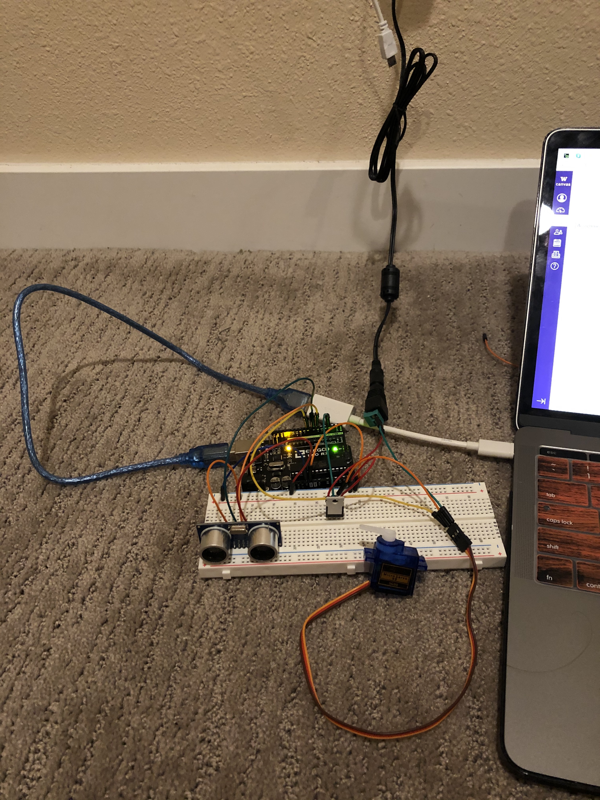

A4: High(er) voltage and transistors!
I got the idea to do this assignment from a Youtube video where that person use ultrasonic sensor to control volume. I always want to make something like that, so I did some research about it. I tried to control the fan with the sensor, but unfortunately, I think somehow I broke it. Lol. Anyway, back to the assignment, since we don't have any thing that has volume, so I decided to use the sensor to control the spin of the motor instead. Whenever I hover around the sensor, the motor will move certain degree, in this case 90 degree. I also use N-MOSFET transitor to control the signal so I won't destroy my arduino if I plug in 110V
Here is my schematic: 
The firmware (as a code snippet):

My circuit and the operation: